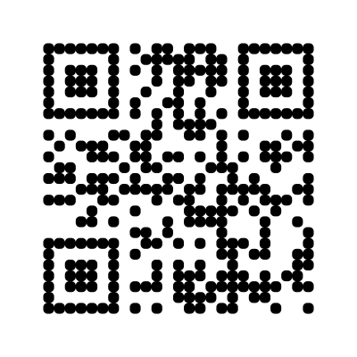

✅ All QR codes generated successfully!
These QR codes were generated using a zero-dependency implementation of
the ISO/IEC 18004 standard. Scan any of them with your phone to verify
they work correctly.
Square Style (Default)
Standard QR code with square modules
Dots Style
Modern aesthetic with circular modules
Rounded Style

Softer appearance with rounded corners
Rounded (High EC)
Error Correction Level: H (30%)
Data encoded: https://github.com
Implementation: Zero dependencies, native TypeScript